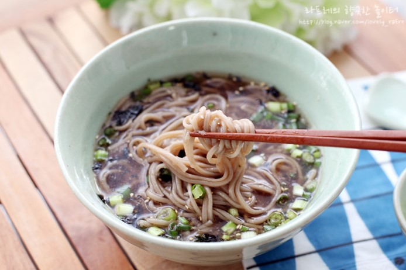

메밀 소바
재료
- 구운 김
- 메밀 국수 (1인분)
- 무 (5cm)
- 고추냉이 (약간)
- 물 (1/2컵)
- 쯔유 (1/2 종이컵)
- 쪽파 (3대)
- 1쯔유를 만든다.

- 2무를 강판에 갈아서 준비한다.

- 3쪽파를 송송 썰어서 준비한다.

- 4쯔유와 물을 섞어 냉동 보관한다.

- 5메밀 국수는 끓는 물에 삶아 찬 물에 헹궈 준비한다.

- 6그릇에 메밀 국수를 올리고 쯔유 소스와 고추냉이, 무, 쪽파와 함께 내어 완성한다.

댓글(1)
 현지현승맘
현지현승맘더운 여름에 딱! 와 정말 맛있겠네요 *^^*
레시피 작성자
메밀국수 드시러 오세요~^^